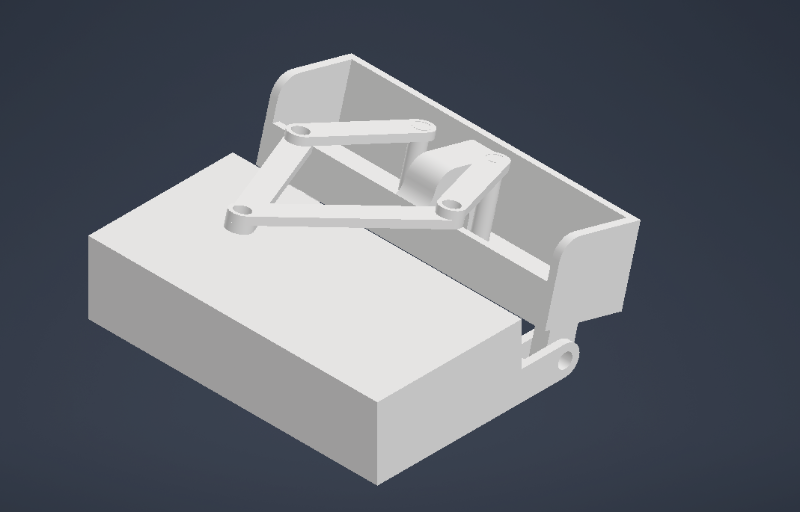

About <<
Previous W3
機器人頭部設計繪圖
.png)
動畫解析
優缺點分析:
本次使用SolidWorks繪製機器人，相比Onshape來說，SolidWorks的使用熟練度較高，在組裝，繪製零件，製作動畫上比使用Onshape效率還要高很多，但目前的缺點是存檔問題，Onshape在這點上就方便很多，有自動存檔在雲端以及提供多人編輯的功能。
繪製心得:
工作臺設計

設計結果
設計心得:
https://www.instructables.com/Plot-Clock-for-dummies/
參考國外大佬設計的工作檯外型，我們連桿機構的基座部分因沒繪製馬達所以先用一桿子代替，連桿結構的部分是使用老師上課提供的尺寸進行繪製，在繪製的過程中也好奇這尺寸是如何計算出來的，但身為大學生的我們能力有限只能求助GPT的幫忙，於是獲得了以下的答案
-
定義座標與符號
-
將基座（ground）兩個固定鉸點放在坐標系上：左基座點 O=(0,0)，右基座點 G=(g,0)，所以基座長度為 g。
-
四個連桿長度：輸入連桿（從 O 出發）長度 a，輸出連桿（接在基座 G 的那根）長度 b，耦合桿（floating link）長度 f，ground（基座）長度 g。
-
角度：輸入角 θ（輸入連桿相對 x 軸的角度），輸出角 ϕ（輸出連桿相對 x 軸的角度），耦合桿相對某軸的角度 γ。
-
向量環路方程（位置閉合）
四連桿的向量環路可以寫成（以向量形式）：
展開成 x、y 分量：
這是典型的兩條方程，未知數通常是 γ、ϕ（給定 θ 與所有長度即可解出 ϕ）——這就稱作位置分析。有多種代數方法可以把這兩條方程化簡成求 ϕ 的單一方程（Freudenstein 方程或把 γ 消去後得到形如 Acosϕ+Bsinϕ=C 的式子）。
-
由已知長度求角度（位置分析）——實作步驟
-
代入並把 γ 消去（把兩條方程平方相加或重組），最後可得到一個形如
的線性三角方程（其中 A、B、C 由 a,g,θ,b,f 組成）。
-
解這類方程的方法：把它轉為單一正切式或用反正切公式，常見解法是
（符號、分子分母形式有不同等價寫法，實作時要小心正負根與分支選擇以符合機構的構型）。
-
一旦 ϕ 解出，就能回代求 γ（例如由 asinθ+fsinγ=bsinϕ 求 γ）。
（參考資料：四連桿位置分析與 Freudenstein 方程的推導，可見教科書或線上教材。）
分工:
41323117:尺寸分析和機器人設計
41323116:資料查詢和四連桿設計
41323124:機器人設計和繪製
41323113:資料查詢和尺寸分析
41323125:工作台設計和動畫
41123153:動畫設計和四連桿繪製
About <<
Previous